레이더 개발 이야기 (35) - 독일의 태양, 영국을 비추다
게시: 2023-05-25T06:30:52+09:00
<살로메와 태양> WW2 발발전 민간용 항공기의 착륙 유도용으로 Lorenz 시스템을 만들었던 Ernst Kramar는 루프트바페로부터 전파 항법 시스템에 대한 도움 요청을 받자 로렌츠를 더욱 확장 발전시켜 보편적 항공기용 전파 항법 시스템을 만듬. 크라머 박사는 그를 위해 획기적인 기술적 돌파를 마련했는데, 지향성 전파를 좁은 beam으로 쏘는 로렌츠 시스템의 특성과 영국이 만든 Orfordness Beacon의 '회전 신호' 특성을 결합한 것. 그 결과가 바로 Sonne (독일어로로 '태양'). 실은 이 존너라는 것은 WW2 발발 이전에 이미 개발을 해놓은 Elektra의 확장 보완판. 교양인이었던 크라머 박사는 원래 WW2 전에 만든 전파 항법 시스템 이름을 리카르트 스트라우스의 오페라 주인공 이름을 따서 '엘렉트라'라고 지었고, 이번에 만든 확장 보완판은 '살로메'(Salome)로 하려 했으나 교양머리 없는 루프트바페 인간들이 그런 교양있는 이름을 묵살하고 태양이라는 뜻의 '존너'로 명명. 실제로는 사람들이 '엘렉트라-존너'라고도 많이 불렀음.
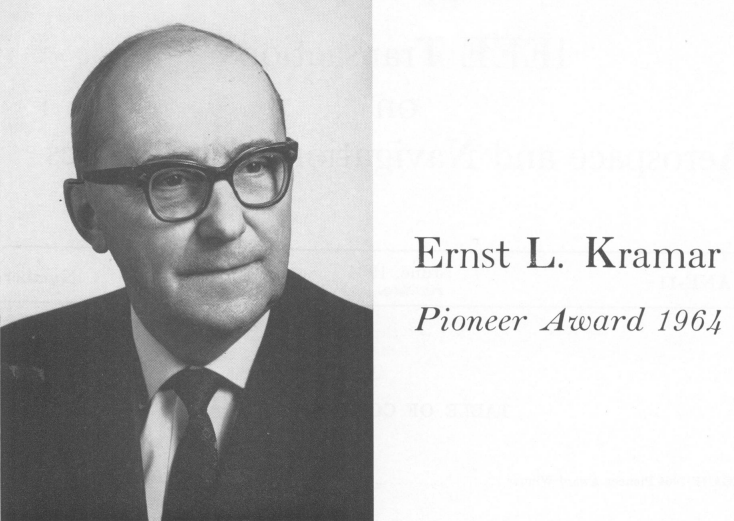
(이 분이 에른스트 크라머 박사. 1964년 세계 전기공학협회 (IEEE)에서 개척자 상도 수상하셨음.) 존너에서 가장 획기적이었던 부분은 위에서 언급했던 것처럼 '회전하는 전파 beam'을 구현하되 실제로는 기계적인 회전 요소도 없고 beam도 없지만 항공기 입장에서는 마치 '회전하는 전파 beam'을 받는 듯한 효과를 만들어냈다는 점. 이건 하나의 발신원에서 나온 신호를 여러 개의 안테나에서 동시에 쏘되, 각 안테나에서 송출되는 전파마다 약간씩 위상 변위(phase shift)를 주어 그 여러 개의 안테나에서 나오는 전파들의 합이 원하는 효과를 내게 한다는 점에서, PESA 레이더와 비슷한 점이 있다고 할 수 있음.
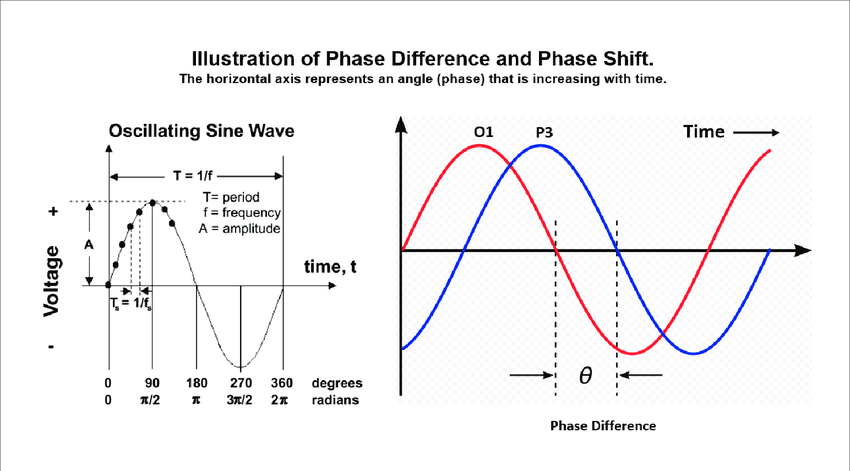
(Phase shift가 뭔지 대충 보여주는 그림)
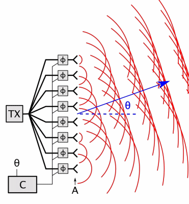
(이건 Phased Array 레이더의 원리인데. 하나의 송신원에서 나온 전파를 여러개의 송신 안테나에서 각기 다른 위상 변위를 주어 송신함으로써 그 간섭-합성 효과로 기계적 회전 없이도 지향성 전파를 회전시키는 원리를 대충 보여주는 그림. 자세히 보면 모든 안테나에서 발신되는 동심원은 똑같은 크기인데, 단지 위쪽 안테나에서 나오는 것들이 아래쪽 안테나보다 반박자 느리게, 즉 위상 변위를 거쳐서 나옴. 그 동심원들이 서로 합쳐져서 약간 위쪽을 향하는 beam을 만듬. PESA는 하나의 송신원에서 나온 전파를 여러개의 안테나가 이용하는 것이고, AESA는 각각의 안테나가 각각의 송신원을 이용하는 것.) 실제로 영국의 Orfordness Beacon은 기계식 회전 안테나를 채택하다보니 영국제 물건답게 기계 결함이 발생하는 일이 잦아 365일 24시간 돌리기에는 부적합. 그러나 기계 결함의 우려가 적은 존너는 (물론 고장이 전혀 없었던 것은 아니었지만) 매우 안정적인 서비스가 가능했음. 엘렉트라-존너 시스템의 핵심은 하나의 발신원에서 나온 전파를 각각 (300kHz 전파의 파장 길이인) 1km 간격을 두고 직선으로 늘어선 3개의 안테나에서 송신하되, 중앙 안테나에서는 그대로의 전파를, 그리고 양 옆의 두 안테나에서는 각각 90도 느리게, 그리고 90도 빠르게 위상 변위(phase shift)된 전파를 내보내는 것. 특히 양 옆의 두 안테나는 switching을 통해 한번은 짧게 (1/6초) 왼쪽 안테나로, 한번은 길게 (5/6초) 오른쪽 안테나로 끊어 보냈음. 즉, 전파 신호를 90도 느리게 보내는 왼쪽 안테나에서는 뚯(dot) 신호가, 90도 빠르게 보내는 오른쪽 안테나에서는 뚜우(dash) 신호가 송신되었음.
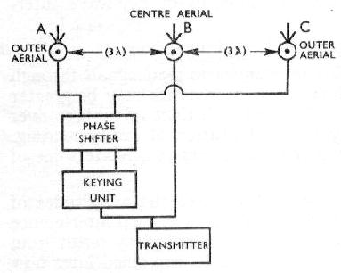
(아주 간단한 Sonne의 구조도. 이 그림처럼 일부 기지국에서는 각 안테나 간의 거리가 파장 1배가 아니라 파장 3배 거리로 배치했음. Keying unit이라고 된 것은 다른 것이 아니라 신호를 보냈다 끊었다 하는 것을 뜻함.)
이렇게 중앙 안테나에서 송신되는 오리지널 전파와 양쪽 두 안테나에서 나오는 변위 전파들은 서로 간섭되고 합성되어 일련의 돌기 같은 전파장(場), 즉 긴 잎사귀 같은 형태인 lobe를 여러개 만들어 냈음.
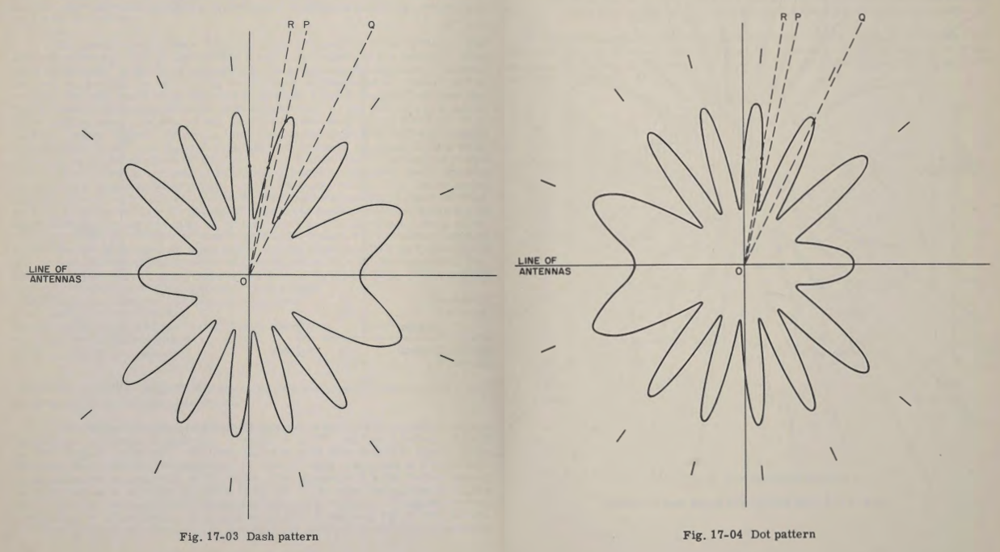
(왼쪽이 dash lobe들이고 오른쪽이 dot lobe들. 중앙의 'line of antennas'라는 선은 1km 간격으로 떨어진 안테나 3개를 이은 선. 일부 기지국에서는 파장 1배 길이인 1km가 아니라 파장 3배 길이인 3km 간격으로 안테나를 배치.) 그러니까 항공기가 이 안테나들의 전파 범위 내에 있다면 이들은 방사상으로 펼쳐진 여러 개의 lobe 중 어느 lobe에 들어 있느냐에 따라 dot 신호 또는 dash 신호를 받게 됨. 그리고 dot lobe의 세기와 dash lobe의 세기가 정확하게 일치하는 지점에서는 그냥 뚜~~~ 하는 등감도 신호(equisignal)가 들림. 그 equisignal 라인들을 연결한 것이 아래 그림.
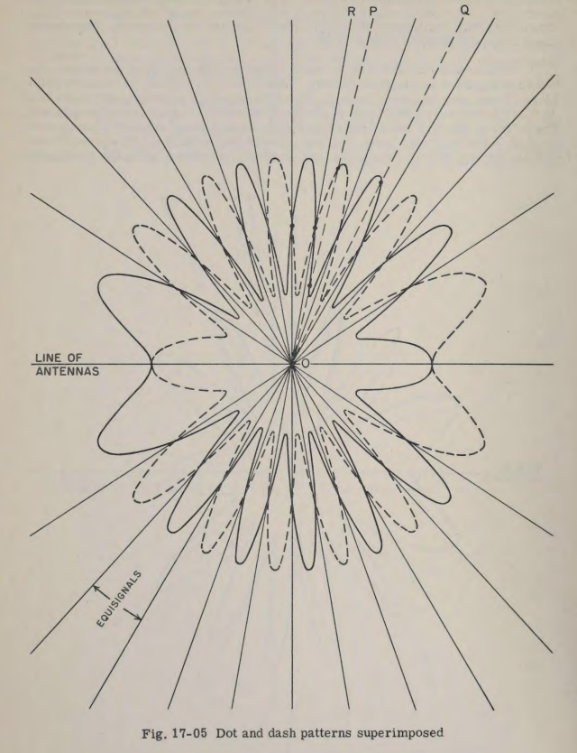
(저 lobe pattern 그림에서 실선 lobe가 dash, 점선 lobe가 dot. 그러니까 P 위치에 있는 항공기는 dash 신호를, Q 위치에 있는 항공기는 dot 신호를 듣게 되고, equisignal 라인에 걸쳐진 항공기는 그냥 띠~~~~하는 연속 신호음을 듣게 됨.)
엘렉트라 시스템에 비해 존너 시스템이 발전한 부분은 양 옆 안테나의 위상 변위 각도를 60초에 걸쳐 천천히 360도 회전시켰다는 것. 이로 인해 전파 lobe들은 조금씩 회전하여 1분 후에는 결국 equisignal line의 위치는 60초 전 바로 옆 equisignal line이 있던 곳으로 회전하게 됨. 여기서 dot lobe나 dash lobe의 각 모양새가 약간씩 달랐으므로 각 equisignal line 간의 각도는 위치마다 약간씩 달랐는데, 최소 9.6도였음. 중요한 것은 1분간 equisignal이 몇 도를 움직이냐가 아니라 1칸을 움직인다는 것. (전자기학을 공부하지 않으신 분들은 조금 이해하시기가 어려우실텐데, 그냥 그런 모양이다 라고 생각하시길 바람. 실은 저도 그런 공부 안 했으므로 제대로 이해 못했습니다.)
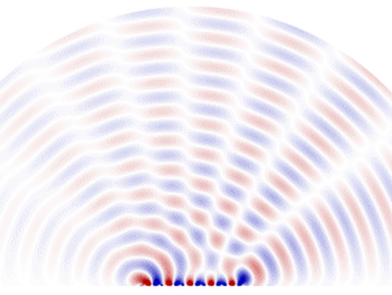
(위상변위의 조율을 통해 그 간섭-합성된 lobe가 안테나의 기계적 회전 없이도 회전하는 모습을 보여주는 시뮬레이션. 여기서는 저 동심원 중앙에 15개의 안테나가 일렬로 설치된 경우임.) 그렇게 equisignal line이 1분에 걸쳐 한 칸씩 회전하니까, 항공기가 존너의 주파수에 무전기를 맞춰두고 가만히 듣고 있으면 처음에는 dot(뚯) 신호가 들리다가, 어느 순간에는 뚜~~~ 하는 등감도 신호(equisignal)가 들리고, 이어서는 반대로 dash(뚜우) 신호가 들리게 됨. 원래 이 dot-dash 신호는 하나의 송신원에서 나온 전파를 switch를 통해 1/6초 동안은 왼쪽 안테나로, 5/6초 동안은 오른쪽 안테나로 보내어 만들어진 것이기 때문에 1분간 언제나 60회의 신호를 보냄. 그러니 그리고 1분에 dot이 몇 개 들리고 dash가 몇 개 들리는지를 세면 자신이 기지국에서 몇 도 각도의 위치에 들어있는지를 알 수 있는 것.
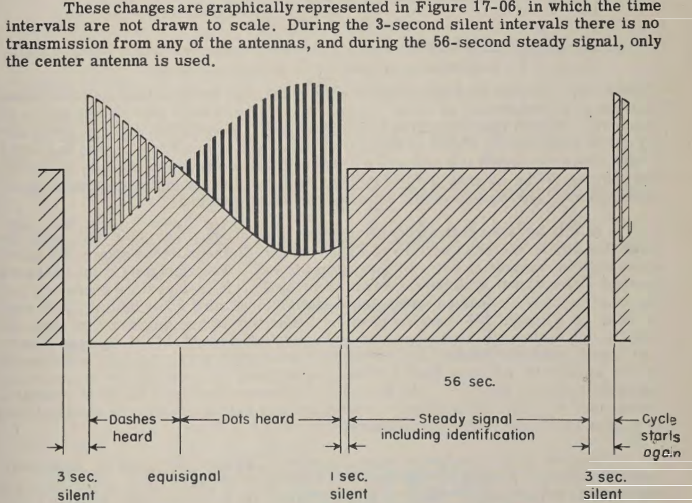
(Sonne는 실제로는 1분간 dot-dash 신호를 보낸 뒤 다음 1분간은 이 기지국이 어느 위치에 있는 기지국인지 알려주는 ID를 포함한 연속 신호를 보냈음. 이는 다음 1분간의 연속 신호를 이용하여 필요시 loop형 안테나로 전파 방향 탐지를 하라는 의도.) 실제로는 그렇게 1분간 들리는 dot-dash 신호의 수를 세고도 꽤 복잡한 계산을 거쳐야 자신이 어느 구역에 있는지 알 수 있었으나, 급히 훈련시킨 항법사들이 그런 것을 제대로 해낼 리가 없으니 아예 해도에다 존너 기지국의 위치에서 방사선으로 뻗어나오는 선을 그리고 각 선 사이의 구역마다 dot-dash가 어떤 조합으로 들리는지를 표시한 해도를 잔뜩 프린트해서 항법사들에게 주었음. 그런 식으로 2곳의 존너 기지국으로부터의 각도를 재고 그 두 선을 그어보면 자신의 위치를 확인 가능. 즉, fix 획득. 다만 이런 식으로 기지국 2곳으로부터의 각도를 재려면 약 5분이 걸렸으므로 폭탄 투하를 위한 정밀도를 얻기에는 무리였고, 항법용으로만 사용.
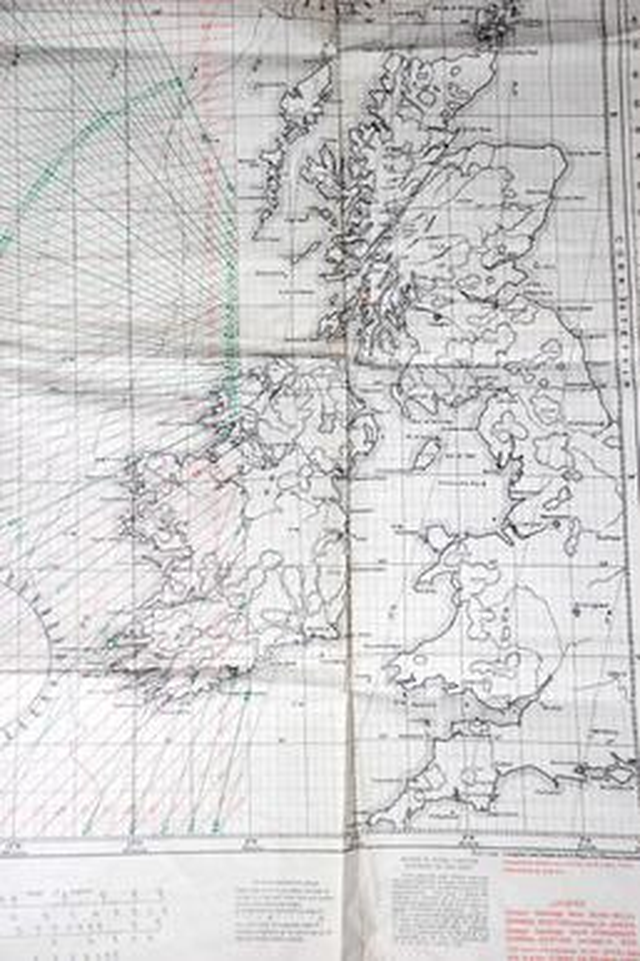
(1946년에 사용된 영국의 Sonne (CONSOL) 해도. 저 방사선상의 구역마다 dot-dash가 몇 번씩 들리는지 적어놓았음)
존너 시스템은 비교적 장파인 300kHz를 사용했으므로 전파는 하늘의 전리층에 반사되어 아주 먼 거리까지 잘 퍼져 나갔으므로 1.5 kW의 전력으로 전파를 송신하면 대략 1600~2000 km까지의 거리에서도 수신이 가능. 이는 유럽 해안에서 대서양 한복판까지의 거리.
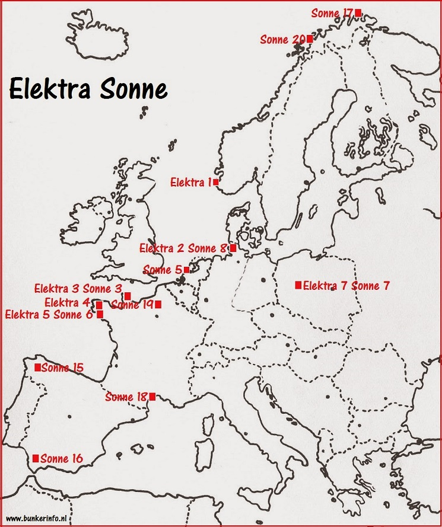
(Sonne의 기지국 위치. 1940년 처음 설치된 곳은 스페인에 2곳, 노르웨이에 1곳. 이어서 네덜란드와 프랑스, 독일 등지를 포함 총 18개 기지국을 세웠음.) <야, 혹시 너두 그거 쓰니?> 비록 레이더는 아니지만 phased array radar의 시조새격인 전파 항법 시스템 존너(Sonne)는 1940년에 개발 완료 되었으나 본격적으로 많이 사용되기 시작한 것은 1943년 경부터. 그러니까 공대함 ASV 레이더를 장착한 로열 에어포스 초계기들의 등쌀에 못 이긴 독일 U-boat가 아예 부상을 포기하고 snorkel (잠항 상태에서도 물 밖에 내놓는 공기 파이프)을 이용하기 시작한 시기와 얼추 일치함. 실제로 스노켈을 이용하면 발각될 확률이 떨어지긴 하지만 잠수함에서는 수면 위로 부상하지 않으면 해와 별을 보고 자신의 위치를 파악할 방법이 전혀 없어짐. 그런데 snorkel을 물 밖으로 내밀 때 무선 안테나도 함께 내밀면 존너 시스템에서 송신되는 신호를 듣고 자신의 위치를 파악할 수 있었음. 존너를 만들고 유지한 것은 루프트바페였지만 루프트바페의 항공기들보다는 오히려 유보트에게 훨씬 더 소중했던 것이 바로 존너.
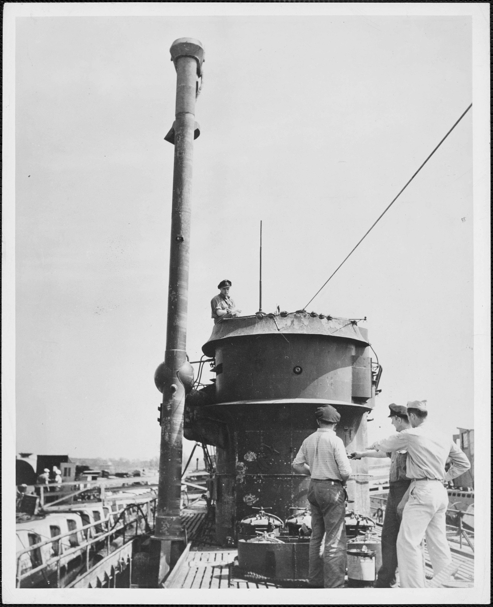
(슈노켈을 장착한 U-boat. 이 사진은 미해군이 나포하여 뉴햄프셔의 포츠머스 항구에 정박시켜 놓은 사진.)
그런데 아이러니컬하게도, 그에 못지 않게 존너를 애용했던 것이 바로 U-boat를 사냥하는 로열 에어포스의 해양 초계기들. 이 이야기는 미해군 항공모함이 나포한 U-boat 이야기에서 시작. 1944년 6월, 서부 사하라 해안 인근에서 Casablanaca급 호위항모인 USS Guadalcanal (CVE-60)이 이끄는 U-boat 사냥 그룹이 독일 잠수함 U-505를 포착. 과달카날에서 발진한 2대의 F4F Wildcat 전투기의 도움을 받은 호위 구축함들이 폭뢰로 U-505를 강제 부상시킨 뒤, 호위 구축함들이 이를 둘러싸고 온갖 구경의 기관포과 5인치 포로 2분간 다구리를 놓던 중 U-505 승조원들이 햇치를 열고 탈출을 시작하는 것이 목격됨. 이에 과달카날의 함장 Gallery 대령은 '가능한 한 격침시키지 말고 나포하라'는 명령을 내렸고 결국 보트로 접근한 미해군 수병들이 텅빈 잠수함에서 각종 기밀서류와 함께 독일군의 암호 장비 Enigma를 손에 넣음. 이어서 U-505에 견인줄을 매달아 무려 4천 km를 끌고 가서 카리브 해 버뮤다까지 끌고 감. 이것이 1815년 이후 129년 만에 미해군이 적함선을 나포한 사건이고, USS Guadalcanal은 대통령 부대표창을 받고 함장 Gallery 대령도 무공훈장(Legion of Merit)을 받음. 현재 U-505는 시카고 과학산업 박물관에 그대로 전시 중.
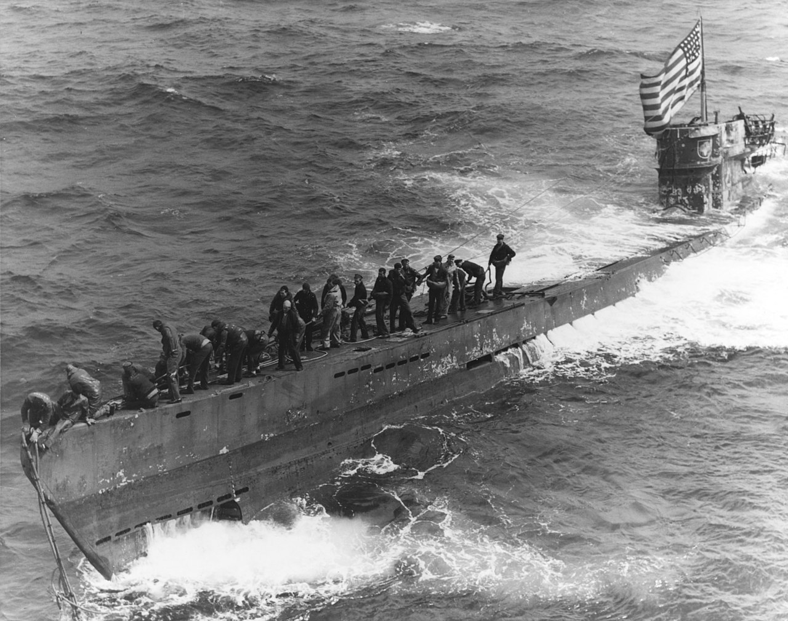 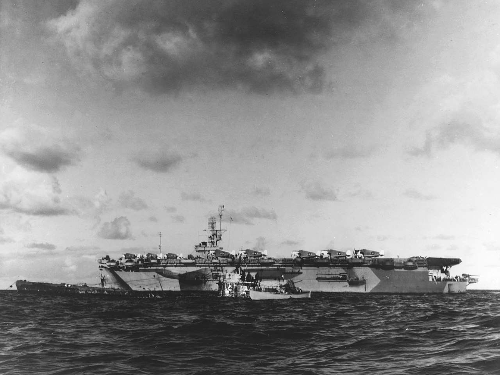
(윗 사진은 막 나포되어 미국 깃발을 날리고 있는 U-505, 아랫 사진은 호위항모 과달카날 옆에 떠있는 U-505) 그런데 이 U-505에서 발견된 문서들 중에 위에서 설명한, 존너 기지국에서 방사선 모양으로 잔뜩 선이 그어진 해도가 발견됨. 포로들을 취조해보고 해도를 분석해본 뒤 연합군은 존너 시스템에 대해 비로소 알게 됨. 연합군은 처음에는 존너를 재밍을 해버릴까 생각했으나 곧 생각이 바뀜. 존너의 여러가지 장점 중 하나가 사용자 측면에서는 그냥 일반 무전기만 있으면 될 뿐 아무런 특수 장비가 없어도 존너를 이용할 수 있다는 점이었는데, 그러다보니 망망대해에서 길찾기에 애를 먹기로는 마찬가지였던 로열 에어포스의 해양 초계기들도 자연스럽게 존너 시스템의 신호를 이용하여 길을 찾기 시작. U-505에서 발견된 해도들을 참조하여 영국군 해도에도 존너의 방사선 표시를 하기 시작. 로열 에어포스에서는 아예 독일군이 만든 존너에 영국군 정식 제식명칭 CONSOL (라틴어로 by the Sun)을 부여하고 공식적으로 사용. 존너 시스템은 살상무기가 아니므로 중립국인 스페인에도 2개 기지국이 설치되었는데, WW2 후반으로 갈 수록 동쪽으로 밀리며 패색이 짙어지던 독일은 스페인 기지국까지 유지정비를 할 수 없게 되어 부품 고장이 발생한 이후 그 기지국의 서비스가 끊김. 그러자 영국군이 부품을 공급해주어 다시 수리한 뒤 서비스를 재개했다고 함.
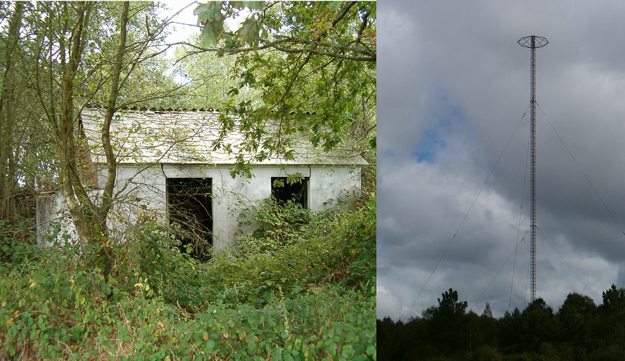
(스페인 Lugo 지역에 지금도 남아있는 독일 Sonne 기지국. 다만 저 100m가 넘는 송신 안테나 타워는 2009년 싸이클론 Klaus가 이 지역을 덮쳤을 때 쓰러졌다고...) WW2 기간 중 영국은 GEE, 미국은 LORAN이라는 전파 항법 시스템을 각각 만들었는데, 전파 항법 시스템을 누구보다 절실히 필요로 했던 로열 에어포스 해양초계기 항법사들은 CONSOL, 즉 독일의 존너 시스템이 가장 사용하기 편하고 우수한 시스템이라고 평가. 실제로 WW2 종전 이후에도 존너 시스템은 계속 사용되어 1970년대 초까지도 민항기들의 항법에 요긴하게 잘 사용되었음.